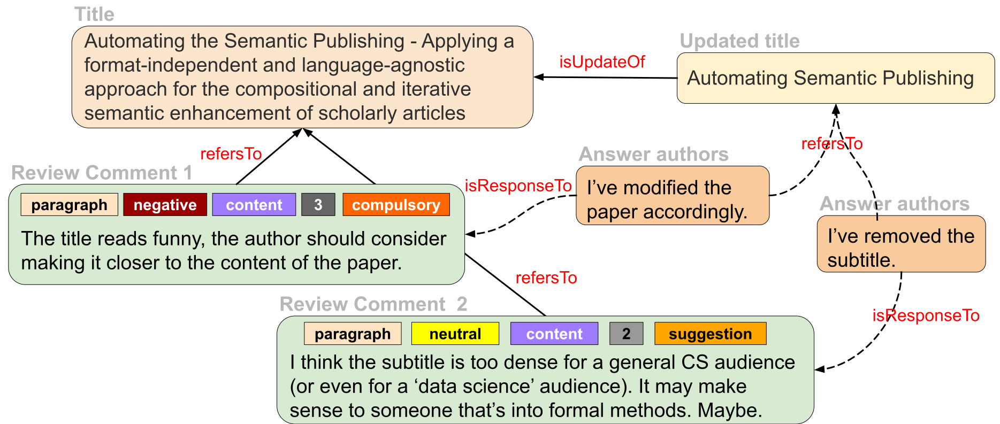
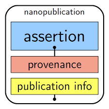
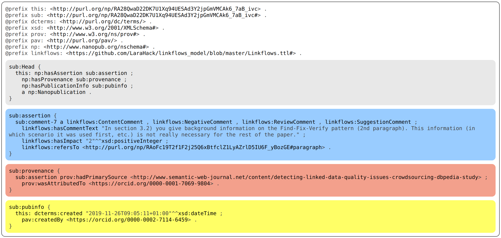
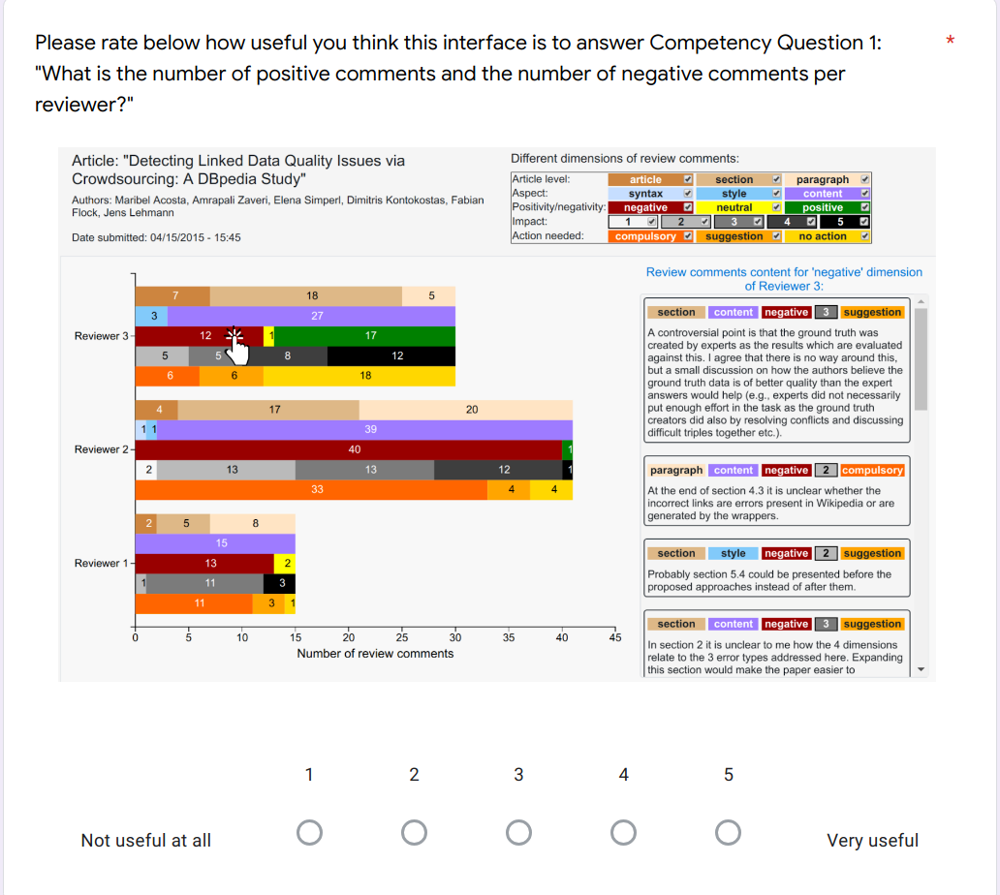
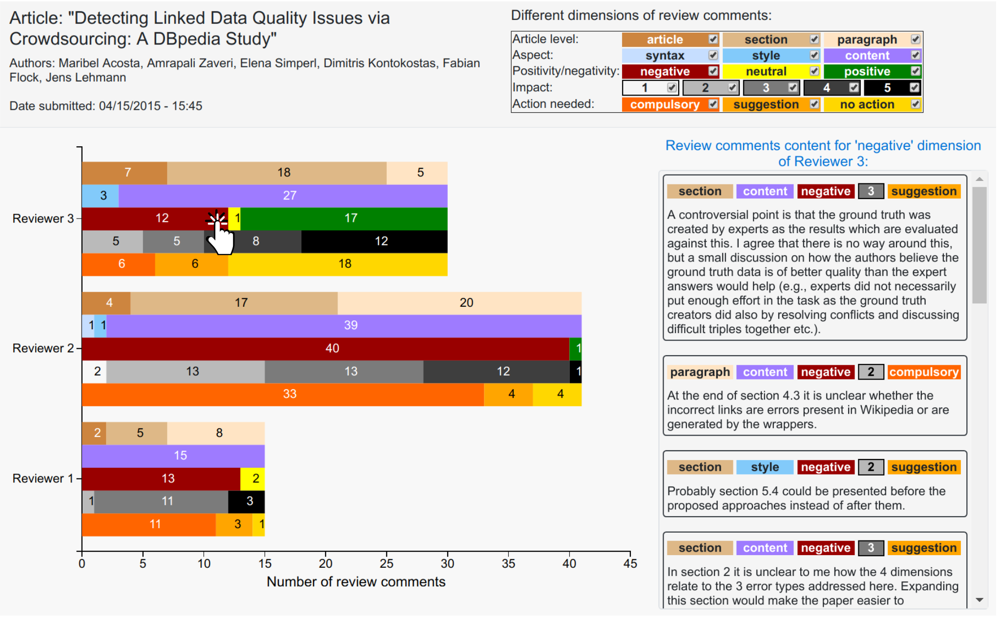
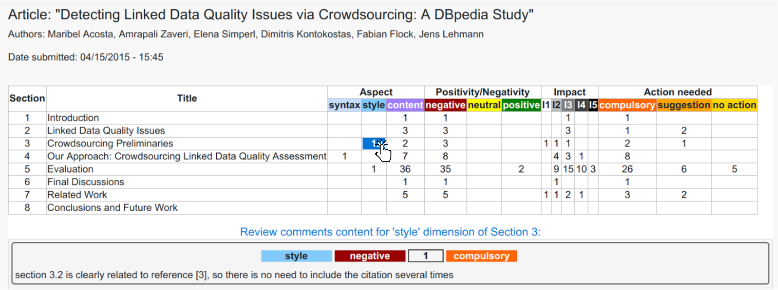
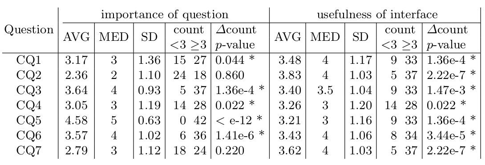

A Unified Nanopublication Model for Effective
and User-Friendly Access to the Elements of
Scientific Publishing
Cristina-Iulia Bucur1 , Tobias Kuhn2 , Davide Ceolin 3
1, 2 Vrije Universiteit Amsterdam, 3 Centrum Wiskunde&Informatika (CWI)
September 2020
These slides: http://bit.do/Linkflows-EKAW-Sept-2020
Scientific publishing: ancient paradigms still in place
- Scientific publishing: disseminate, share and assess research
- Long coarse-grained text in natural language: stuck to formats like PDF
- Articles: digitized, maybe semantically enriched, but not machine-readable
- Measure of quality: reviewing; not a transparent and efficient process!
A nanopublication-style communication interaction

Research question
Can we use the concept of nanopublications as a unifying model to represent in a semantic way the elements of publications, their assessments as well as the involved processes, actors and provenance?
A nanopublication: a fine-grained provenance-aware Linked Data format

Nanopublication of a review comment

Research questions (1)
- RQ1: Can we use nanopublications as a unifying data model to represent the structure, links and assessments of manuscripts in a precise, transparent, and provenance-aware manner?
- (Eval RQ1) Applying model:
- descriptive results on a small case study
Small use case dataset: recent publications from the Semantic Web Journal
| Descriptive statistics |
|
|
|
| part of article |
number |
| articles
|
3
|
| reviewers
|
9
|
| sections
|
89
|
| paragraphs
|
279
|
| figures
|
11
|
| tables
|
10
|
| formula
|
8
|
| footnote
|
2
|
| review comments
|
213
|
|
| Statistics nanopublications |
|
|
|
|
number |
| Nanopublications
|
627
|
| Assertion triples
|
5420
|
| Provenance triples
|
1254
|
| Publication info triples
|
1255
|
| Average download time(s)
|
11.66
|
| Average download time/nanopub(ms)
|
18.6
|
| Total triples
|
10 437
|
|
Research questions (2)
- RQ2: Is a fine-grained semantic publishing and reviewing model able to provide editors with answers to common competency questions?
- (Eval RQ2) Competency questions (CQs):
- SPARQL representations
- prototype of a fine-grained semantic analysis interface
Competency questions from the editor's point of view:
- CQ1: What is the number of positive and negative comments per reviewer?
- CQ2: What is the number of positive and negative comments per section?
- CQ3: What is the distribution of review comments with respect to the content or the presentation (syntax and style) of the article?
- CQ4: What is the nature of the review comments with respect to whether they refer to a specific paragraph or a larger structure (section or the whole article)?
- CQ5: What are the critical points raised by the reviewers (negative comments) with a high impact on the quality of the paper?
- CQ6: How many points that need to be addressed by the authors were raised, as an estimate of the work needed for a revision?
- CQ7: How do the review comments cover the different sections and paragraphs of the paper?
Maybe a short demo with SPARQL queries here?!
Research questions (3)
- RQ3: Can we design an intuitive and effective interface based on a fine-grained semantic publishing and reviewing model that supports journal editors?
- (Eval RQ3) Editor study:
- perceived importance of the defined CQs for editors
- perceived usefulness of the prototype for answering CQs
Editor study: importance of CQs and usefulness of interface
- sent to editors of Computer Science journals: PeerJ CS, Semantic Web, Data Science Journal
- 401 questionnaire requests, received a total of 42 answers (10.5%)
Editor study: questionnaire for editors
|
|
| 2. Interface usefulness |
|
|
|
| 
|
|
Editor study interface: reviewer-oriented view

Editor study interface: section-oriented view

Most of the CQs are considered important, while our interface is considered useful

Conclusions
- Answer to RQ1: representations of the different elements of scientific publishing is possible in a fine-grained and semantic manner with nanopublications
- Answer to RQ2: it is possible to automatically answer a set of CQs for editors
- Answer to RQ3: editors mostly find CQs important and a visual representation useful
Future work
- Aggregations and visualizations to help not only editors, but also reviewers and authors
- Using the unified nanopublication approach to represent research findings: AIDA sentences
- Fine-grained, transparent, provenance-aware assessment of article quality